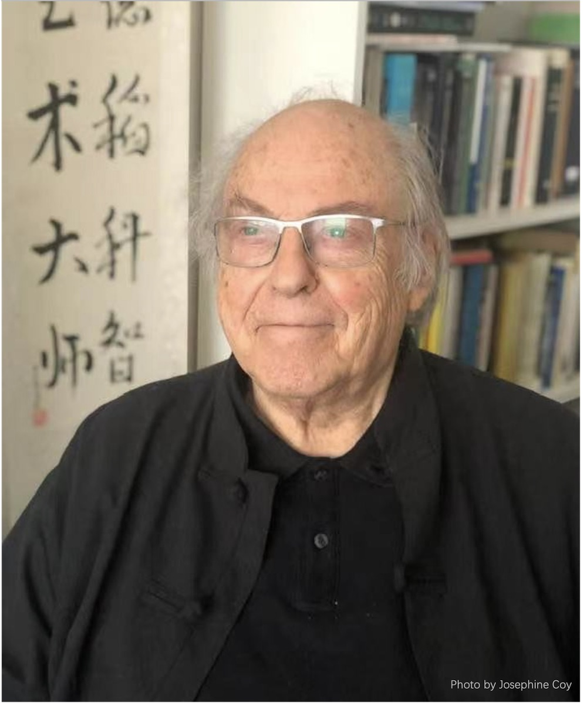
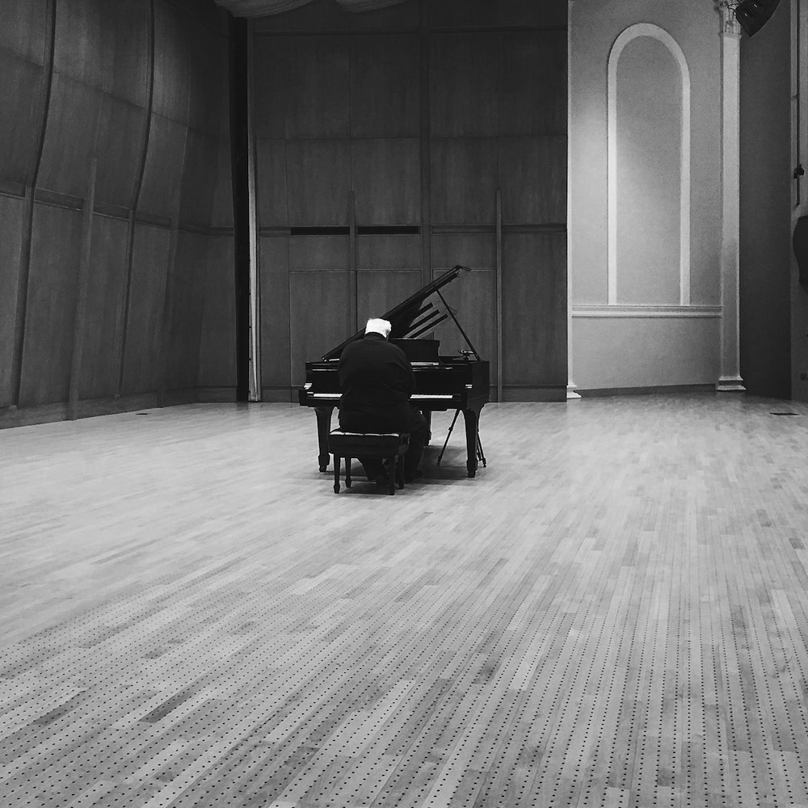

Photo: Richard Kerris. Courtesy of Alvy Ray Smith.
I rode the digital supernova at SIGGRAPH through its first 50 years, an explosion by 10 orders of magnitude! Pixar was only one result of a multitude. Come join me at SIGGRAPH 2024 as the dizzying ride continues to explode, and watch, rather make, the next orders reveal themselves...
- Alvy Ray Smith
We hope that the future is green and sustainable... We all can do our best to make it happen.
- Christa Sommerer
Video: Christa Sommerer & Laurent Mignonneau. Courtesy of the artists.
Interactivity will never die.
- Laurent Mignonneau
Fifty years ago I was learning how to programme a computer using a pencil and eraser to write UPPER CASE FORTRAN on green coding sheets which were passed on to the all-women typing pool for conversion to punched cards. The Uni had one central mainframe batch-operated computer: an ICL 1903A located in the Maths Dept (Computer Science didn’t exist back then) which output paper tape to an offline Calcomp plotter with 24-hour minimum turn-around time. Vector plots, only the most rudimentary graphics libraries, no 3-D, no hidden-line removal. Engineering had a real-time DEC PDP8 minicomputer for teaching budding hardware engineers’ hands-on skills and allowed occasional access to a keen art student: patching machine code using the switches on the front panel. Today I’m writing this on one of my 14 systems (not including iPhones, teevees and other domestic Knick knacks) which are, I suspect, all more powerful than a Cray supercomputer was back its day – Moore’s Law rules! And, with the advent of usable quantum computing I suspect that in the not-too-distant future Moore’s Law will be dispatched to the forgotten metrics of pre-history.
And, now I’m asked to predict what the state of computer graphics, computational and generative
art, special FX and visualisation may be like in 50 years’ time!
I have no idea. Except perhaps – it will be like magic! A lot more AI and transparency.
Back on the human scale I remain very concerned about our activities in the Anthropocene.
The upsurge of nationalism, fundamentalism and associated conflict coupled with the
inability of governments and major multi-nationals to address the threat of climate change
suggests to me that the infrastructure necessary to maintain civilisation will be undermined
over the next half century. I remain optimistic that we will see the development of an
autonomous, robust, self-replicating and sentient artificial intelligence during this period that
may be able continue our search for meaning in the universe and become our evolutionary successor.
I hope that they will also continue our obsession with making art and indulging in creativity
for its own sake.
- Paul Brown
Photo courtesy of Paul Brown.
Paul Brown, Brick Bradford in Cyberspace, Algorithmic Image, 2000. Courtesy of the artist.

Brenda Laurel, Technology is a doorway to nature, 2007. Courtesy of the artist.
I took the photo in 2007 at Kylemore Abbey in Ireland. It stuck with me. Years before, I was deeply moved when I saw the first computer-animated waving grass at SIGGRAPH.
- Brenda Laurel
Photo courtesy of Brenda Laurel.
Video: Valerie Wolf Gang. Courtesy of the artist.
In the next 50 or 100 years I think we will not need our bodies anymore we will live in Virtual Worlds
I hope the SIGGRAPH will bring you some notion of how to use technology for good.
Let's use all these tools to help each other to support each other and be there for each other.
- Valerie Wolf Gang
The foundation of SIGGRAPH provided a meeting place that encouraged creative debate and creative technology around the topics of graphics.
SIGGRAPH has represented and promoted creative uses of computer technology for 50 years. Under the broad heading of Computer Graphics, technical innovations, new applications, visual art and much more have been given a unified home and focus. My own first involvement in both talking about and exhibiting computer-based art was at a UK Computer Graphics conference, CG70, in 1970. Quite a few pioneers took part. However, it was not repeated and the important link between this creative practice and computer graphics technologies was left aside. The foundation of SIGGRAPH provided a meeting place that encouraged creative debate and creative technology around the topics of graphics.
I believed then, as I still do, that creative computing, particularly creating art, required a strong relationship to research into graphics and interaction. Thank goodness for SIGGRAPH. By 1981, an art exhibition was incorporated, and not much later art papers were encouraged. Many of the most important figures in the field participated, met one another, and advanced their development. It has been important to me that I have shown work in some of these exhibitions and presented papers about my creative work to SIGGRAPH. Later came the creation of the digital artist Lifetime Achievement Award. I am proud to be one of those recipients, joining friends and colleagues who are leading figures in computer-based art. Today there are many more outlets for this kind of work than there was in 1970, or when SIGGRAPH began in 1974, but the role that the conference plays is both important now and will remain so for the next 50 years. Technology continues to advance and the computer-based arts continues to both respond to these changes and, indeed, contribute to computer graphics research and its creative potential. 30 March 2024
- Ernest Edmonds
Ernest Edmonds, Shaping Space, 2012, an interactive installation. Photo taken in exhibition at Site Gallery Sheffield UK by Robert Edmonds. Courtesy of the artist.
Photo courtesy of Ernest Edmonds.
Video: fragment of a conversation between David Em & Everardo Reyes
One of the things that fascinated me about digital technology early on was that it worked across multiple media.
- David Em
The way that we look at pictures is going through a tremendous transformation. Creating the work is important, but equally important if not perhaps even more so is self- curating the work.
Things have become in a sense uh completely democratized which is great because people bring different cultures and different experiences based on their their background.
Video courtesy of the artist.
This video explores our anxieties around human and machine creativity, at a time of intense investment in machine learning technology. To make the video, I used three off-the-shelf avatars which have been AI-generated. The avatars then have been programmed to each deliver a script responding to the following query: What will art after AI look like?. Blinking, smiling, and occasionally glitching, the avatars merge a friendly professional disposition with an Uncanny Valley look. Their narratives—written by GPT-4, ChatGPT, and the myself— invite a reflection on an increasingly thin line that separates original thinking from algorithmic banality, in humans and machines.
- Joanna Zylinska
Photo courtesy of Joanna Zylinska.
Past must future
The choice between the path to the future and the path to destruction is in our hands, and that is the essence of democracy. We must recognize the importance of sustainability and ethical considerations in technology development and act accordingly.
As media artists, researchers, and citizens of the world, we raise our voices, inspired by the urgency and potential of the digital future. At a time when the Earth is facing existential challenges, we must unite to secure its future. We must be prepared, even for the good.
- Monika Fleischmann
& Wolfgang Strauss

Photo by Mark Feigmann, Berlin, 2017. Courtesy of Monika Fleischmann & Wolfgang Strauss.
- Nick Montfort
"Khipu: Electrotextile Prehispanic Computer", Constanza Piña Pardo. Photo courtesy of Annick Bureaud, 2023.
In 50 years from now, digital technologies will have become analog and back to low tech materials. But it will be (very) high tech in terms of Human Brain Capacity. People will be inspired by textile such as the Jacquard loom, or music machines like the old fashioned barrel organ or the very complex khipu. It will all be soft and tactile. People will be counting on their fingers and stop sucking digit.
- Annick Bureaud
Photo courtesy of Annick Bureaud.
Photo: Sam Grant. Courtesy of Behnaz Farahi.
I hope the future of SIGGRAPH is critical and demonstrates how integrating emerging technologies could be seen not as an end in itself, but as a means of addressing social and political issues, and challenging dominant outlooks. The role of computation is not to be merely decorative and aesthetically pleasing. It also needs to send powerful socio-political messages, and challenge injustice.
- Behnaz Farahi
Video: fragment of a conversation between Aaron Marcus & Everardo Reyes
Many more people will become attracted to generating imagery and interactive artworks
To be able to draw a realistic image requires very careful attention to what we're seeing. The generative AI techniques to create images and texts makes it so easy .
- Aaron Marcus
In some ways is good and in some ways it should make us um think carefully about the future.
Courtesy of Richard Lowenberg.
Photo courtesy of Richard Lowenberg.
Artful Artificial Intelligence.
- Richard Lowenberg
As we move into the future, Technoetic artists face the challenge of creating a syncretic art that explores telematics (planetary connectivity), nanotechnology (bottom up construction), quantum computing (augmented cyberception), cognitive science and pharmacology (field consciousness), and esoterica (psychic instrumentality).
Technoetic arts comprises the integration of art, science, technology, and consciousness research.
I coined the term Technoetic to describe a very specific sensibility, one that is leading to new visions of what art can become, what the mind can embrace, and how culture might develop.
I invite artists and developers to develop a predictive intelligence to tools and software, making technoetic art practice anticipatory, whilst grounded in the contemporary moment.
- Roy Ascott
"We are heading for all". Image courtesy of the artist, 2024.
Photo courtesy of Roy Ascott.
It's been 50 years since I started Computer Graphics, in 1975. I have participated in every SIGGRAPH since 1979 to this year, 2024.
I was awarded the Distinguished Artist Award in 2010 and was elected as an honorable Academy member in 2018.
We continued the sake party online for three years during the Corona disaster, and the sake party in 2024 will be the 37th.
In 2073, my biological age will be 121 years old, but the boundaries between virtual space and real space are even more blurred, and I will continue to make works.
The theme of my work, which consistently focuses on biological intelligence, envisions its evolution over the next 500 million years.
Taking jellyfish as an example, jellyfish have succeeded in survival as a species with evolution tailored to the environment, such as those that have poison and those that emit light. Sea anemones, starfish, and sea urchins also genetically originated from jellyfish. In the next 500 million years, jellyfish may be walking.
I think of the swimming system in the water, the walking system on land, the flying system floating in the sky, and each future space creature as a partner for space exploration.
The human body may also evolve, take out brain data, and create works as Yoichiro Kawaguchi with a different body.
I've always wanted to be active in 4 or higher dimensions that overcome time and space. In that respect, I hope it will be interesting during my survival.
I want to jump into deep space.
- Yoichiro Kawaguchi
Photo courtesy of Yoichiro Kawaguchi.
Video courtesy of Yoichiro Kawaguchi, May 2024.
When I think of the next 50 years, as a media researcher and media artist I am thinking about many issues concerning the health of the planet. In particular I am interested in AI, and the changes it may bring about, both positive and negative. In terms of computer graphics and interactive techniques I am continuing to work on my Neosentience project, often collaborating with students, professional programmers, and international media developers, on articulating the functionalities of the Insight Engine 2.0. Currently Gregory Baker is functioning as the professional programmer overseeing the project, and Duy Trieu has been the main student programmer.
Neosentience research has to do with studying the body through biomimetics and bio-abstraction, exploring the mind/brain/body/environment set of relations to inform the authorship of a new form of AI and related robotic system. The notion is to create both an alternative research space employing the Unreal Game Engine, as well as a related website for international exploration. I am seeking to have a number of perspectives covered in the databases that serve this exploration. In order to facilitate the complexity of Neosentience research the latest goal is to create what is titled The Insight Engine 2.0. This is an interactive relational database, and 3d visualization system being authored via the use of a game engine as the front end, and multiple focused database topics.
The ultimate goal of this system is to define a working model, which might potentially enable Neosentience to arise via a robotic system’s functionality. Research related to this goal is accomplished through the use of an intelligent transdisciplinary database, search engine, a natural language Application Programming Interface (API), and a dynamic set of visualization modes. A series of independent human collaborators will be sought to interact with this vast system, as well as AI computational collaborators— The Insight Engine 2.0 (I_E_2). We seek to employ open-source Large Language Models (LLMs) as part of this open-source system, in particular to help build bridges between differing knowledge domains. The growing set of overarching research areas will be developed over time and populate the Insight Engine 2.0. Because AI is changing fast this should be an interesting system for perusal by both individuals and high-level researchers.
The different research areas that populate the Insight Engine 2.0 include the following (although new research areas will continuously be added as suggested/needed):
Insight Engine 2.0
• Neosentience;
Consciousness Studies
• Sentience and Sapience;
• Bodily Entailment Structures (and related research technologies);
• Mindful Awareness/Self-observation;
• ART - Adaptive Resonance Theory;
• Autonomous Adaptive Intelligence;
• Universal Development Code;
• Attention Schema Theory;
• Spike Timing Networks;
• Brain Modules;
• Cognitive Architectures;
• Reinforcement Learning;
Disciplines
• Synthetic Biology;
• Second-order Cybernetics;
• Neuroscience and Computational Neuroscience;
• Neuroscience and the Arts;
• Android Linguistics (Evan Donahue);
• Related New Forms of Mathematics;
Computation
• Multi-modal Sensing;
• The Biological Computer Lab;
• AI and the Arts – Computational Creativity;
• Biomimetics;
• Bio-abstraction;
• The Connectome;
• Exploring Neuromorphic chip architectures;
• Quantum Computing via Neuromorphic Systems;
• Computational Intuition;
AI
• The History of AI;
• Artificial General Intelligence;
• EI—Extended Intelligence;
• Embodied Computation;
• Approaches to Computational Learning - Conversation Theory etc.;
Robotics
• Robotics and situated knowledge production;
• Ethical and Social Implications of AI and Robotics;
• Human / Robotic Interaction
Social and Cultural Ramifications
• Feminism and AI;
• Social Bias and AI;
• Racial Bias and AI;
• Science Fiction;
• New approaches to energy creation and consumption related to computation;
Systems Thinking
• Explainable Artificial Intelligence;
• Building Bridges Between Disciplines;
• Transdisciplinarity—A Multi-perspective Approach to Knowledge Production;
• Information–New Approaches;
I am asking that people might write to me at bill.seaman@duke.edu and suggest that they would like to be added to a mailing list that will let people know about the progress of the Insight Engine 2.0, and in particular when it comes online. They will also be notified about the related website development. There will be different ways to use the system – as someone who is just exploring the databases, and other approaches where individuals are functioning as active researchers, uploading their papers designated by Title, Author, Abstract, Key words, and relevant links. I believe this can become a space that will lead to new research, and individual collaborations as well as discussions across a wide array of domains.
I believe this system may be an important resource as well as employ sophisticated forms of interaction and visualization. Many papers can initially be found related to the project at billseaman.com.
- Bill Seaman

Photo courtesy of John Supko.
Photo courtesy of Bill Seaman.